An exhaustive Bayesian inference environment for R/C++ and OpenMP
lucifer is the next-generation evolution of the legendary LaplacesDemon package. It provides an exhaustive Bayesian inference environment for R, with over 130 algorithms behind a single, unified model interface: one Model function, all engines. A declarative model_spec() DSL lets you write models in near-mathematical notation, then compile() them to native C++ for zero R-callback overhead during sampling. The computational core is built on Rcpp and RcppArmadillo with OpenMP parallelization, so that the most demanding operations (gradient evaluation, matrix decomposition, particle filtering) execute at compiled speed across all available cores. lucifer is not just an MCMC sampler; it is a complete environment for specifying, fitting, diagnosing, comparing, and validating Bayesian models.
Beyond its own inference engines, lucifer is designed to be language-agnostic about where posterior samples come from. Through as.demonoid() it ingests fits produced by Stan via rstan, cmdstanr, brms, and rstanarm, by JAGS via rjags and runjags, by the coda package, and by the posterior package (draws_array, draws_matrix, draws_df), returning a native demonoid on which the entire post-processing, diagnostic, and visualisation pipeline applies unchanged. For more details and a worked example that fits the same hierarchical model with every JAGS wrapper, every Stan wrapper, and every lucifer inference family side by side, see vignette("interoperability", package = "lucifer").
Features
Inference engines (130+ algorithms)
82 MCMC samplers spanning every major family: gradient-based (NUTS, HMC, MALA, SGLD, Barker, autoMALA, GIST-NUTS), adaptive Metropolis (AM, RAM, DRAM), slice sampling (ESS, AFSS, QSS, LSS, GPSS), ensemble methods (AIES, DEMC, Zeus, DREAM, QMC), geometric and Riemannian (RMHMC, Lagrangian MC, Magnetic HMC), piecewise-deterministic (BPS, Boomerang, Zig-Zag, Randomized HMC), multimodal (simulated tempering, NRST, Wang-Landau, NRPT), flow-enhanced (NeuTra, flowMC), and constraint-handling (projected Langevin, ProxMCMC).
8 variational Bayes methods including ADVI, BBVI, SVGD, and Pathfinder multi-path initialization.
18 Laplace approximation optimizers (BFGS, L-BFGS, Newton-Raphson, trust region, conjugate gradient, and others).
3 iterative quadrature rules (AGH, AGHSG, CAGH).
PMC and SMC with adaptive tempering and ESS-based resampling.
4 ABC variants (rejection, MCMC, SMC, simulated annealing).
6 simulation-based inference methods (NPE, NLE, NRE, SNPE, SNLE, SNRE) via mixture density networks and neural ratio estimation.
5 state-space model engines (FFBS, PGAS, SMC2, KSC, MS-FFBS) with Kalman, unscented Kalman, ensemble Kalman, and particle filters.
Model specification and compilation
model_spec()declarative DSL for writing models in near-mathematical syntax.compile()translates the specification to native C++ with automatic gradient computation via dual-number AD or finite differences, eliminating R-callback overhead entirely.76+ probability distributions implemented in C++ with analytical gradients.
Automated workflow
Prescribe()profiles the model and recommends algorithms based on dimensionality, gradient availability, and posterior geometry.Consort()diagnoses convergence and suggests refinements.Arena()benchmarks competing methods and identifies the Pareto frontier of efficiency versus accuracy.Crucible()chains the entire pipeline into a single automated call.
Model comparison and validation
LOO-PSIS cross-validation with Pareto k diagnostics.
K-fold and leave-future-out cross-validation.
Bayesian stacking weights for model combination.
ProductSpace()Bayesian model selection via Bayes factors.
Sensitivity and identifiability
RobustBayes()for power-scaling sensitivity, prior-data conflict detection, observation influence analysis, and robust aggregation.DataCloning()for MLE estimation and formal parameter identifiability assessment via data augmentation.
Domain-specific engines
SDE()for stochastic differential equations with 11 built-in families, supporting exact, Euler-Maruyama, Milstein, and particle filter likelihoods.NODE()for neural ODEs via Bayesian gradient matching with a C++ backend.SSM()for state-space models with Kalman, UKF, EnKF, and particle filter backends.
Frequentist-Bayesian bridge
freq_summary(),wald_test(),lr_test(),score_test()for classical inference on posterior output.profile_likelihood()andconfint_compare()for comparing Bayesian credible intervals with frequentist confidence intervals.coverage_sim()for frequentist coverage calibration.
Interoperability
Import posterior samples from Stan (
rstan,cmdstanr,brms), JAGS (rjags,runjags),coda, and theposteriorpackage.Export to
mcmc.list,draws_array,draws_matrix, anddraws_df.
Diagnostics and visualization
- Split R-hat, bulk and tail ESS, MCSE, and divergence tracking.
- Pareto k diagnostics for LOO-PSIS reliability.
- 21 ggplot2-based plot types with a publication-quality
theme_relab().
Installation
# Development version from GitHub
remotes::install_github("robustecologies/lucifer")The package requires a C++17 compiler with OpenMP support. On most Linux and Windows systems these are available by default. macOS users may need to install libomp via Homebrew (brew install libomp) and configure the compiler flags in ~/.R/Makevars.
Quick start
The following example fits a hierarchical random-intercept regression with Student-\(t\) errors, a model that combines partial pooling across \(J\) groups with heavy-tailed residuals, making it robust to outliers while borrowing strength across groups.
Model
\[y_i \sim t_\nu(\mu_i,\, \sigma), \quad i = 1, \dots, N\] \[\mu_i = \alpha_{g[i]} + \beta\, x_i\] \[\alpha_j \sim \mathcal{N}(\mu_\alpha,\, \sigma_\alpha), \quad j = 1, \dots, J\] \[\mu_\alpha \sim \mathcal{N}(0,\, 10), \qquad \sigma_\alpha \sim \mathcal{HC}(2.5)\] \[\beta \sim \mathcal{N}(0,\, 10), \qquad \sigma \sim \mathcal{HC}(2.5)\] \[\nu_{\text{raw}} \sim \text{Exp}(0.1), \qquad \nu = \nu_{\text{raw}} + 2\]
The priors follow the weakly informative recommendations of Gelman et al. (2017): half-Cauchy(2.5) for scale parameters constrains the posterior without dominating the likelihood, and Normal(0, 10) for location parameters covers plausible regression effects. The reparameterization \(\nu = \nu_{\text{raw}} + 2\) ensures finite variance (\(\nu > 2\)) while placing an Exponential(0.1) prior with mean 10 on the excess degrees of freedom, gently regularizing toward moderate tail behavior.
Specification
lucifer’s model_spec() DSL translates the mathematical notation above almost verbatim into a model object. The resulting object contains the compiled Model function, a data_template() for building the data list, and initial_values() for generating starting points. No manual log-posterior coding is needed.
library(lucifer)
spec <- model_spec("
y ~ StudentT(mu, sigma, nu)
mu = alpha[group] + beta * x
alpha[j] ~ Normal(mu_alpha, sigma_alpha), j = 1,...,J
mu_alpha ~ Normal(0, 10)
sigma_alpha ~ HalfCauchy(2.5)
beta ~ Normal(0, 10)
sigma ~ HalfCauchy(2.5)
nu_raw ~ Exponential(0.1)
nu = nu_raw + 2
")Data simulation
We simulate data from the true model with known parameter values so that we can verify posterior recovery. With \(J = 10\) groups and \(N = 1000\) observations (100 per group), the hierarchical hyperparameters \(\mu_\alpha\) and \(\sigma_\alpha\) are well identified, and the Student-\(t\) degrees of freedom have enough tail information for reliable estimation. The data_template() method constructs the list that lucifer expects (including parm.names and mon.names), and initial_values() provides a reasonable starting point.
set.seed(666)
N <- 1000; J <- 10
group <- rep(1:J, each = N / J)
x <- rnorm(N)
# True parameter values
alpha_true <- rnorm(J, mean = 3, sd = 1.5)
beta_true <- 2.0
sigma_true <- 1.0
nu_true <- 5
y <- alpha_true[group] + beta_true * x + sigma_true * rt(N, df = nu_true)
# Prepare data and initial values
Data <- spec$data_template(y = y, x = x, group = group, J = J)
Initial.Values <- spec$initial_values(Data)Algorithm selection
Before fitting, Prescribe() profiles the model (dimensionality, gradient availability, parameter constraints) and scores every available algorithm. The output ranks methods by expected efficiency and flags potential issues.
rx <- Prescribe(spec$Model, Data, Initial.Values)
print(rx)
#>
#> ⚙ Prescribe: pre-fit algorithm recommendation
#> ──────────────────────────────────────────────────
#>
#> Model fingerprint:
#> Parameters: 15 (moderate)
#> Eval speed: 150000 evals/min (fast)
#> Gradients: not available
#> Constraints: 0% of parameters
#> Conditioning: moderate
#> Multimodality: 1.00 (0 = unimodal, 1 = strongly multimodal)
#>
#> ✔ Primary recommendation: SMC (SMC)
#> sequential tempering, robust to multimodality, provides marginal likelihood; d=15 (moderate)
#>
#> Code:
#> fit <- SMC(Model, Data, Initial.Values,
#> N.particles = 1000, Rejuvenation.steps = 5)
#>
#> Alternatives:
#> 2. AIES (MCMC) [score: 1.094]
#> population-based, handles multimodality; d=15 (moderate)
#> 3. Zeus (MCMC) [score: 1.094]
#> population-based, handles multimodality; d=15 (moderate)
#> 4. DREAM (MCMC) [score: 1.094]
#> population-based, handles multimodality; d=15 (moderate)
#>
#> ⚠ Strong multimodality hints detected. Consider ensemble MCMC or SMC.
#>
#> Profiling time: 0.2 seconds
plot(rx)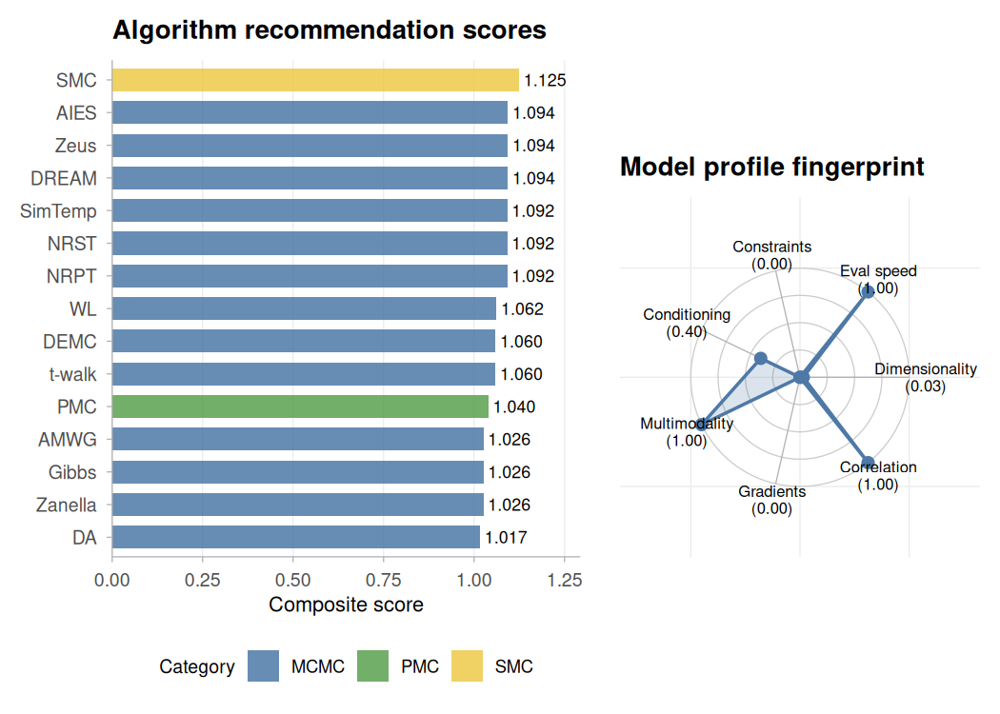
Fitting with SMC
Prescribe() recommends Sequential Monte Carlo (SMC) as a top strategy for this model. SMC() builds a sequence of tempered distributions from the prior to the posterior, reweighting and rejuvenating particles at each stage. It provides a marginal likelihood estimate as a byproduct, which is useful for model comparison. With 1000 particles and 10 rejuvenation steps per stage, the posterior approximation is stable across random seeds.
set.seed(216)
fit_smc <- SMC(spec$Model, Data, Initial.Values,
Iterations = 1000, N.particles = 1000,
ESS.threshold = 0.5, Rejuvenation = "RWM",
Rejuvenation.steps = 10, Schedule = "adaptive",
Status = 9999)
summary(fit_smc)
#> Sequential Monte Carlo -- summary
#> ==================================================
#> Call: SMC(Model = spec$Model, Data = Data, Initial.Values = Initial.Values,
#> Iterations = 1000, N.particles = 1000, ESS.threshold = 0.5,
#> Rejuvenation = "RWM", Rejuvenation.steps = 10, Schedule = "adaptive",
#> Status = 9999)
#>
#> Particles: 1000
#> Tempering stages: 21
#> Log marginal lik: -2489.599
#> Minutes: 1.58
#>
#> Tempering schedule:
#> 0 0.0159 0.0341 0.0727 0.116 ... 0.6447 0.7851 1
#>
#> ESS across stages:
#> Min: 71.6 Mean: 379.5 Max: 561.6
#>
#> Rejuvenation acceptance rate:
#> Min: 0.113 Mean: 0.253 Max: 0.766
#>
#> Posterior summary:
#> Mean SD 2.5% 50% 97.5%
#> alpha[1] 3.0374 0.1471 2.7437 3.0366 3.3154
#> alpha[2] 5.3448 0.1265 5.1018 5.3513 5.5818
#> alpha[3] 1.6962 0.1419 1.4069 1.6914 1.9675
#> alpha[4] 1.1279 0.1390 0.8451 1.1282 1.4069
#> alpha[5] 2.9802 0.1329 2.7322 2.9819 3.2415
#> alpha[6] 3.7366 0.1321 3.4882 3.7289 3.9967
#> alpha[7] 1.3644 0.1308 1.0990 1.3664 1.6367
#> alpha[8] 1.1654 0.1538 0.8872 1.1647 1.4644
#> alpha[9] 1.4302 0.1405 1.1737 1.4282 1.7029
#> alpha[10] 4.0685 0.1441 3.8156 4.0599 4.3679
#> mu_alpha 2.4799 1.5422 -0.0363 2.3246 6.9734
#> sigma_alpha 3.0081 3.2198 0.9858 2.0140 14.9714
#> beta 1.9738 0.0435 1.8830 1.9757 2.0598
#> sigma 1.0092 0.0444 0.9296 1.0113 1.1046
#> nu_raw 5.1390 1.9863 2.5496 4.6353 10.1766When a ground_truth vector is provided, plot() overlays the true parameter values as dashed lines on the posterior densities, making it straightforward to assess recovery. The "intervals" type shows 95% credible intervals with diamond markers at the truth.
ground_truth <- c(alpha_true, mu_alpha = 3, sigma_alpha = 1.5,
beta_true, sigma_true, nu_raw = nu_true - 2)
names(ground_truth) <- Data$parm.names
plot(fit_smc, ground_truth = ground_truth)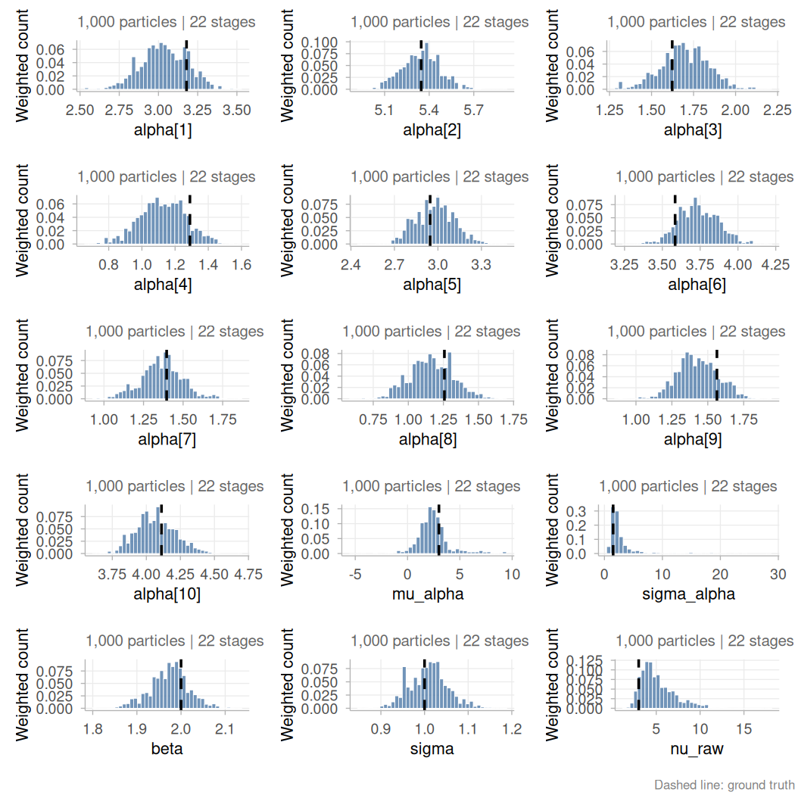
plot(fit_smc, type = "intervals", ground_truth = ground_truth)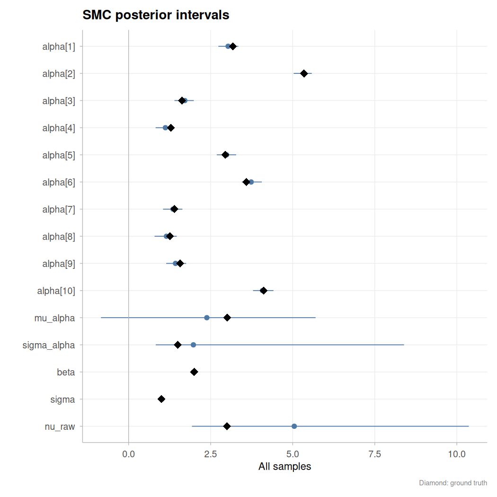
Fitting with MCMC
lucifer provides 82 MCMC algorithms behind the same lucifer() interface. According to the Prescribe()function fitting above, several ensemble and population MCMC methods may provide sensible fittings to the proposed model. As an illustration, here we use Zeus, an ensemble slice sampler that is gradient-free and affine-invariant (see vignette("mcmc-algorithms", package = "lucifer") for the full algorithm catalogue). With Chains = 3, three chains run in parallel via separate R processes, each with a deterministic per-chain seed derived from the parent’s RNG state. After sampling, the chains are automatically combined. Hierarchical models with centered parameterizations present challenging funnel geometries for ensemble MCMC methods; the diagnostics section below shows how Consort() detects this and recommends corrective actions.
set.seed(616)
fit_mcmc <- lucifer(spec$Model, Data, Initial.Values,
Iterations = 5000, Status = 100, Thinning = 5,
Algorithm = "Zeus", Specs = NULL,
Chains = 3)
summary(fit_mcmc)
#>
#> Algorithm: Ensemble Slice Sampler
#> Iterations: 15000
#> Thinned samples: 3000
#> Minutes: 3.54
#> Chains: 3
#> CPUs: 3
#>
#> --- Acceptance ---
#> Combined: 1
#> Per-chain: 1, 1, 1
#>
#> --- Convergence ---
#> Stationarity: achieved
#> Burn-in (thinned): 2400 (auto-BMK)
#> Posterior2 samples: 600
#> Recommended thinning: 34
#>
#> --- Split R-hat (Vehtari et al. 2021) ---
#> Max split R-hat: 1.193 (NOT converged, target < 1.01)
#>
#> --- Gelman-Rubin diagnostic (classical) ---
#> Point Est. Upper C.I.
#> alpha[1] 1.031 1.095
#> alpha[2] 1.014 1.045
#> alpha[3] 1.019 1.066
#> alpha[4] 1.031 1.108
#> alpha[5] 1.001 1.005
#> alpha[6] 1.028 1.096
#> alpha[7] 1.016 1.052
#> alpha[8] 1.026 1.094
#> alpha[9] 1.136 1.424
#> alpha[10] 1.005 1.008
#> mu_alpha 1.093 1.281
#> sigma_alpha 1.053 1.105
#> beta 1.007 1.013
#> sigma 1.024 1.057
#> nu_raw 1.025 1.070
#> Max PSRF: 1.136 (convergence NOT adequate, target < 1.1)
#> MPSRF: 1.155
#>
#> --- DIC ---
#> All Stationary
#> Dbar 3179.315 3145.310
#> pD 18270.451 14.179
#> DIC 21449.767 3159.490
#> Log(Marginal Likelihood): NA
#>
#> --- Posterior summary (all samples) ---
#> Mean SD MCSE ESS LB Median
#> alpha[1] 3.0133 0.2535 0.0214 175.3397 2.6965 3.0456
#> alpha[2] 5.2337 0.4560 0.0660 123.4678 4.4825 5.3035
#> alpha[3] 1.7234 0.2594 0.0211 38.7875 1.2532 1.7324
#> alpha[4] 1.0961 0.1880 0.0121 298.3415 0.8260 1.1025
#> alpha[5] 2.9594 0.2804 0.0298 163.2059 2.5250 2.9872
#> alpha[6] 3.7522 0.3369 0.0297 246.4887 3.4676 3.7517
#> alpha[7] 1.3648 0.2431 0.0278 120.9488 1.0854 1.3876
#> alpha[8] 1.1572 0.2970 0.0298 156.4175 0.8616 1.1836
#> alpha[9] 1.4715 0.2543 0.0230 180.7139 1.2032 1.4575
#> alpha[10] 4.0183 0.3405 0.0341 159.1806 3.3884 4.0629
#> mu_alpha 2.5713 0.6598 0.0602 228.1331 1.0992 2.6080
#> sigma_alpha 1.5653 0.4372 0.0396 240.6391 0.9730 1.4839
#> beta 1.9765 0.0729 0.0058 273.2122 1.8926 1.9762
#> sigma 1.0166 0.1881 0.0227 136.9447 0.9163 0.9913
#> nu_raw 4.2514 1.2309 0.1506 127.2311 2.2501 4.1133
#> Deviance 3179.3155 191.1567 24.9499 124.8773 3137.5562 3146.0637
#> LP -1620.8141 96.6524 12.6466 122.4433 -1788.6574 -1604.0635
#> UB
#> alpha[1] 3.2515
#> alpha[2] 5.5378
#> alpha[3] 2.1083
#> alpha[4] 1.3431
#> alpha[5] 3.2237
#> alpha[6] 4.1674
#> alpha[7] 1.6265
#> alpha[8] 1.4391
#> alpha[9] 1.9198
#> alpha[10] 4.2938
#> mu_alpha 3.7250
#> sigma_alpha 2.6539
#> beta 2.0645
#> sigma 1.3216
#> nu_raw 7.0664
#> Deviance 3495.1684
#> LP -1599.2771
#>
#> --- Posterior summary (stationary samples) ---
#> Mean SD MCSE ESS LB Median UB
#> alpha[1] 3.0443 0.1163 0.0125 156.4074 2.8410 3.0434 3.2858
#> alpha[2] 5.2998 0.1085 0.0297 24.6319 5.1092 5.2932 5.5262
#> alpha[3] 1.7194 0.1078 0.0252 27.3862 1.5249 1.7198 1.9138
#> alpha[4] 1.1128 0.1093 0.0076 325.1385 0.9133 1.1115 1.3307
#> alpha[5] 2.9746 0.1086 0.0304 35.8874 2.7808 2.9721 3.1886
#> alpha[6] 3.7499 0.1160 0.0299 21.5140 3.5318 3.7380 4.0063
#> alpha[7] 1.4099 0.1123 0.0264 30.8852 1.1700 1.4125 1.6071
#> alpha[8] 1.2087 0.1181 0.0111 194.1325 0.9809 1.2068 1.4547
#> alpha[9] 1.4649 0.0898 0.0163 45.1818 1.3058 1.4632 1.6317
#> alpha[10] 4.0830 0.1102 0.0267 29.0596 3.8534 4.0897 4.2744
#> mu_alpha 2.6563 0.5811 0.1737 26.0303 1.4823 2.6754 3.9325
#> sigma_alpha 1.6083 0.4221 0.0598 102.1369 1.0147 1.5398 2.6302
#> beta 1.9685 0.0367 0.0099 23.6329 1.8907 1.9705 2.0398
#> sigma 0.9832 0.0378 0.0101 25.2595 0.9227 0.9787 1.0663
#> nu_raw 4.1908 1.0694 0.2993 36.3761 2.4716 3.9975 6.7294
#> Deviance 3145.3105 5.3253 1.1615 32.7184 3137.1656 3144.5181 3157.7133
#> LP -1603.6250 2.9489 12.6466 32.8708 -1610.5642 -1603.0757 -1599.1592
#>
#> --- Effective sample size ---
#> Min ESS: 38.8 (alpha[3])
#> Median ESS: 163.2
#> Min Bulk-ESS: 68.9 (alpha[3])
#> Min Tail-ESS: 61.8 (alpha[3])
#>
#> --- Overall assessment ---
#> Lucifer is NOT appeased: MCSE too large for some parameters; low ESS (min=38.8); Gelman-Rubin PSRF >= 1.1.
plot(fit_mcmc, ground_truth = ground_truth)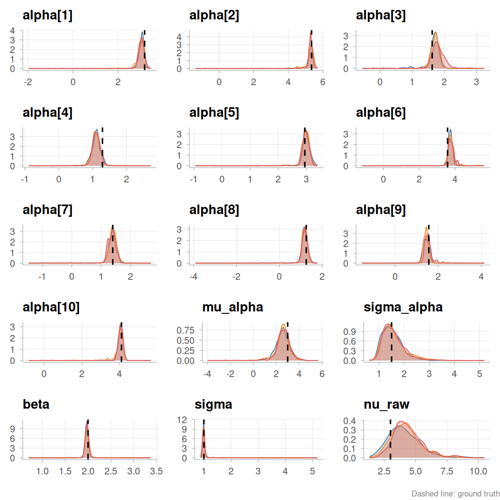
plot(fit_mcmc, type = "intervals", ground_truth = ground_truth)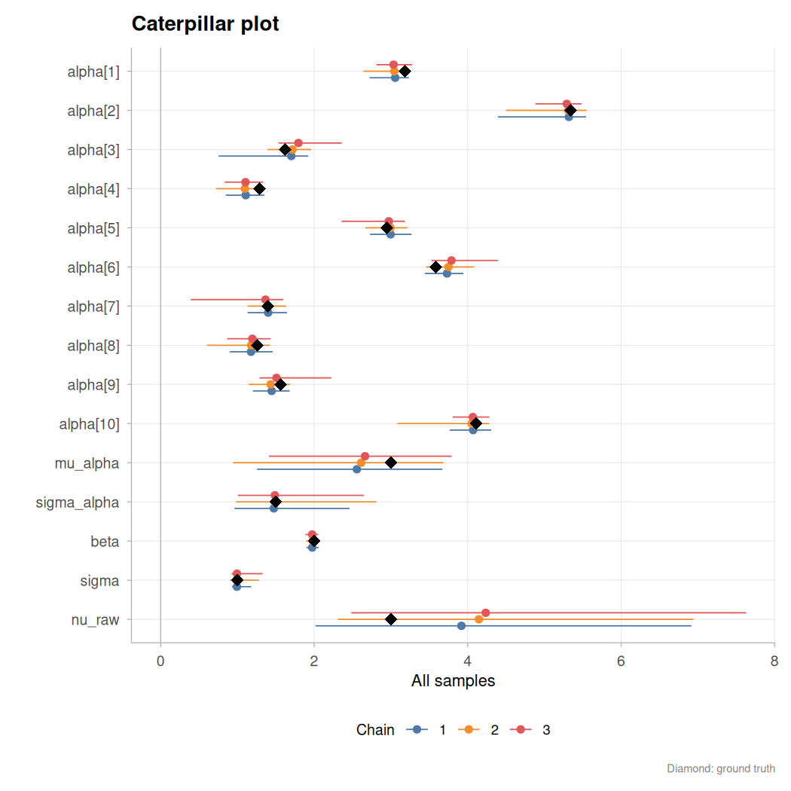
Diagnostics and sensitivity
Consort() runs modern convergence diagnostics (split \(\hat{R}\), bulk/tail ESS, MCSE) and returns structured recommendations. RobustBayes() performs sensitivity analysis: "power" measures how much the posterior changes when the prior or likelihood is scaled, detecting prior-data conflicts and influential prior choices. The dashboard displays all modules in a single panel.
cx_smc <- Consort(fit_smc)
#>
#> Consort with Lucifer
#> ────────────────────────────────────────
#> Algorithm: SMC (SMC, sequential)
#> Time: 1.58 min
#>
#> Final ESS ratio ✔ not available
#> Tempering stages ✔ not available
#>
#> ✔ Lucifer has been appeased.
rb_smc <- RobustBayes(fit_smc, Model = spec$Model, Data = Data,
modules = "all")
#> ⚙ Running power-scaling sensitivity...
#> [ ] 1.0% | ETA: 3s[= ] 2.0% | ETA: 2s[= ] 3.0% | ETA: 1s[== ] 4.0% | ETA: 1s[== ] 5.0% | ETA: 1s[== ] 6.0% | ETA: 1s[=== ] 7.0% | ETA: 1s[=== ] 8.0% | ETA: 1s[==== ] 9.0% | ETA: 0s[==== ] 10.0% | ETA: 0s[==== ] 11.0% | ETA: 0s[===== ] 12.0% | ETA: 0s[===== ] 13.0% | ETA: 0s[====== ] 14.0% | ETA: 0s[====== ] 15.0% | ETA: 0s[====== ] 16.0% | ETA: 0s[======= ] 17.0% | ETA: 0s[======= ] 18.0% | ETA: 0s[======== ] 19.0% | ETA: 0s[======== ] 20.0% | ETA: 0s[======== ] 21.0% | ETA: 0s[========= ] 22.0% | ETA: 0s[========= ] 23.0% | ETA: 0s[========== ] 24.0% | ETA: 0s[========== ] 25.0% | ETA: 0s[========== ] 26.0% | ETA: 0s[=========== ] 27.0% | ETA: 0s[=========== ] 28.0% | ETA: 0s[============ ] 29.0% | ETA: 0s[============ ] 30.0% | ETA: 0s[============ ] 31.0% | ETA: 0s[============= ] 32.0% | ETA: 0s[============= ] 33.0% | ETA: 0s[============== ] 34.0% | ETA: 0s[============== ] 35.0% | ETA: 0s[============== ] 36.0% | ETA: 0s[=============== ] 37.0% | ETA: 0s[=============== ] 38.0% | ETA: 0s[================ ] 39.0% | ETA: 0s[================ ] 40.0% | ETA: 0s[================ ] 41.0% | ETA: 0s[================= ] 42.0% | ETA: 0s[================= ] 43.0% | ETA: 0s[================== ] 44.0% | ETA: 0s[================== ] 45.0% | ETA: 0s[================== ] 46.0% | ETA: 0s[=================== ] 47.0% | ETA: 0s[=================== ] 48.0% | ETA: 0s[==================== ] 49.0% | ETA: 0s[==================== ] 50.0% | ETA: 0s[==================== ] 51.0% | ETA: 0s[===================== ] 52.0% | ETA: 0s[===================== ] 53.0% | ETA: 0s[====================== ] 54.0% | ETA: 0s[====================== ] 55.0% | ETA: 0s[====================== ] 56.0% | ETA: 0s[======================= ] 57.0% | ETA: 0s[======================= ] 58.0% | ETA: 0s[======================== ] 59.0% | ETA: 0s[======================== ] 60.0% | ETA: 0s[======================== ] 61.0% | ETA: 0s[========================= ] 62.0% | ETA: 0s[========================= ] 63.0% | ETA: 0s[========================== ] 64.0% | ETA: 0s[========================== ] 65.0% | ETA: 0s[========================== ] 66.0% | ETA: 0s[=========================== ] 67.0% | ETA: 0s[=========================== ] 68.0% | ETA: 0s[============================ ] 69.0% | ETA: 0s[============================ ] 70.0% | ETA: 0s[============================ ] 71.0% | ETA: 0s[============================= ] 72.0% | ETA: 0s[============================= ] 73.0% | ETA: 0s[============================== ] 74.0% | ETA: 0s[============================== ] 75.0% | ETA: 0s[============================== ] 76.0% | ETA: 0s[=============================== ] 77.0% | ETA: 0s[=============================== ] 78.0% | ETA: 0s[================================ ] 79.0% | ETA: 0s[================================ ] 80.0% | ETA: 0s[================================ ] 81.0% | ETA: 0s[================================= ] 82.0% | ETA: 0s[================================= ] 83.0% | ETA: 0s[================================== ] 84.0% | ETA: 0s[================================== ] 85.0% | ETA: 0s[================================== ] 86.0% | ETA: 0s[=================================== ] 87.0% | ETA: 0s[=================================== ] 88.0% | ETA: 0s[==================================== ] 89.0% | ETA: 0s[==================================== ] 90.0% | ETA: 0s[==================================== ] 91.0% | ETA: 0s[===================================== ] 92.0% | ETA: 0s[===================================== ] 93.0% | ETA: 0s[====================================== ] 94.0% | ETA: 0s[====================================== ] 95.0% | ETA: 0s[====================================== ] 96.0% | ETA: 0s[======================================= ] 97.0% | ETA: 0s[======================================= ] 98.0% | ETA: 0s[========================================] 99.0% | ETA: 0s[========================================] 100.0% | ETA: 0s
#> [========================================] 100.0% | ETA: 0s
#> ¡ Power-scaling prior...
#> ¡ Power-scaling likelihood...
#> ⚠ Cross-model comparison skipped: requires >= 2 fits.
#> ⚠ Prior-data conflict skipped: Data$PGF not found.
#> ⚙ Running observation influence analysis...
#> ¡ Computing pointwise log-likelihoods...
#> ¡ Stochastic yhat detected; using LOO-Dev decomposition (1000 x 1000 evaluations)...
#> [ ] 1.0% | ETA: 166s[= ] 2.0% | ETA: 167s[= ] 3.0% | ETA: 163s[== ] 4.0% | ETA: 162s[== ] 5.0% | ETA: 158s[== ] 6.0% | ETA: 155s[=== ] 7.0% | ETA: 152s[=== ] 8.0% | ETA: 151s[==== ] 9.0% | ETA: 148s[==== ] 10.0% | ETA: 146s[==== ] 11.0% | ETA: 144s[===== ] 12.0% | ETA: 142s[===== ] 13.0% | ETA: 140s[====== ] 14.0% | ETA: 139s[====== ] 15.0% | ETA: 137s[====== ] 16.0% | ETA: 135s[======= ] 17.0% | ETA: 133s[======= ] 18.0% | ETA: 131s[======== ] 19.0% | ETA: 130s[======== ] 20.0% | ETA: 128s[======== ] 21.0% | ETA: 127s[========= ] 22.0% | ETA: 125s[========= ] 23.0% | ETA: 123s[========== ] 24.0% | ETA: 122s[========== ] 25.0% | ETA: 120s[========== ] 26.0% | ETA: 119s[=========== ] 27.0% | ETA: 117s[=========== ] 28.0% | ETA: 115s[============ ] 29.0% | ETA: 114s[============ ] 30.0% | ETA: 112s[============ ] 31.0% | ETA: 110s[============= ] 32.0% | ETA: 109s[============= ] 33.0% | ETA: 107s[============== ] 34.0% | ETA: 106s[============== ] 35.0% | ETA: 104s[============== ] 36.0% | ETA: 102s[=============== ] 37.0% | ETA: 101s[=============== ] 38.0% | ETA: 99s[================ ] 39.0% | ETA: 97s[================ ] 40.0% | ETA: 96s[================ ] 41.0% | ETA: 94s[================= ] 42.0% | ETA: 93s[================= ] 43.0% | ETA: 91s[================== ] 44.0% | ETA: 89s[================== ] 45.0% | ETA: 88s[================== ] 46.0% | ETA: 86s[=================== ] 47.0% | ETA: 85s[=================== ] 48.0% | ETA: 83s[==================== ] 49.0% | ETA: 81s[==================== ] 50.0% | ETA: 80s[==================== ] 51.0% | ETA: 78s[===================== ] 52.0% | ETA: 77s[===================== ] 53.0% | ETA: 75s[====================== ] 54.0% | ETA: 73s[====================== ] 55.0% | ETA: 72s[====================== ] 56.0% | ETA: 70s[======================= ] 57.0% | ETA: 69s[======================= ] 58.0% | ETA: 67s[======================== ] 59.0% | ETA: 65s[======================== ] 60.0% | ETA: 64s[======================== ] 61.0% | ETA: 62s[========================= ] 62.0% | ETA: 61s[========================= ] 63.0% | ETA: 59s[========================== ] 64.0% | ETA: 57s[========================== ] 65.0% | ETA: 56s[========================== ] 66.0% | ETA: 54s[=========================== ] 67.0% | ETA: 53s[=========================== ] 68.0% | ETA: 51s[============================ ] 69.0% | ETA: 49s[============================ ] 70.0% | ETA: 48s[============================ ] 71.0% | ETA: 46s[============================= ] 72.0% | ETA: 45s[============================= ] 73.0% | ETA: 43s[============================== ] 74.0% | ETA: 41s[============================== ] 75.0% | ETA: 40s[============================== ] 76.0% | ETA: 38s[=============================== ] 77.0% | ETA: 37s[=============================== ] 78.0% | ETA: 35s[================================ ] 79.0% | ETA: 33s[================================ ] 80.0% | ETA: 32s[================================ ] 81.0% | ETA: 30s[================================= ] 82.0% | ETA: 29s[================================= ] 83.0% | ETA: 27s[================================== ] 84.0% | ETA: 25s[================================== ] 85.0% | ETA: 24s[================================== ] 86.0% | ETA: 22s[=================================== ] 87.0% | ETA: 21s[=================================== ] 88.0% | ETA: 19s[==================================== ] 89.0% | ETA: 18s[==================================== ] 90.0% | ETA: 16s[==================================== ] 91.0% | ETA: 14s[===================================== ] 92.0% | ETA: 13s[===================================== ] 93.0% | ETA: 11s[====================================== ] 94.0% | ETA: 10s[====================================== ] 95.0% | ETA: 8s[====================================== ] 96.0% | ETA: 6s[======================================= ] 97.0% | ETA: 5s[======================================= ] 98.0% | ETA: 3s[========================================] 99.0% | ETA: 2s[========================================] 100.0% | ETA: 0s
#> [========================================] 100.0% | ETA: 0s
#> ¡ Computing PSIS-LOO influence...
#> ⚠ Robust aggregation skipped: requires >= 2 fits.
#> ✔ RobustBayes completed in 2.7 minutes.
print(rb_smc)
#>
#> Robust Bayesian sensitivity analysis
#> --------------------------------------------------
#> Models: 1 (smc)
#> Parameters: 15
#> Observations: 1000
#> Time: 2.7 min
#>
#> ¡ Power-scaling sensitivity:
#> ✔ robust: 15 parameter(s)
#> Top prior-sensitive: sigma_alpha (0.045), mu_alpha (0.038), alpha[8] (0.022)
#>
#> ¡ Observation influence:
#> ✔ 0 of 1000 observations flagged (Pareto k > 0.7)
plot(rb_smc, type = "dashboard")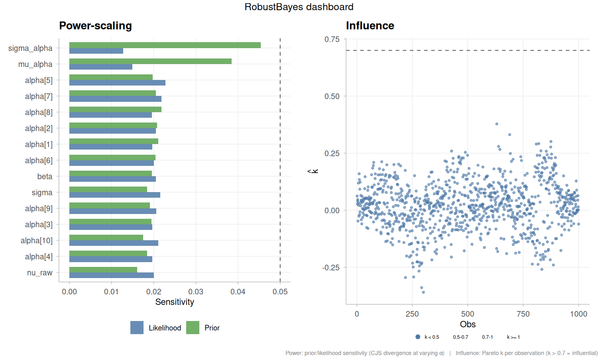
plot(rb_smc, type = "power_density")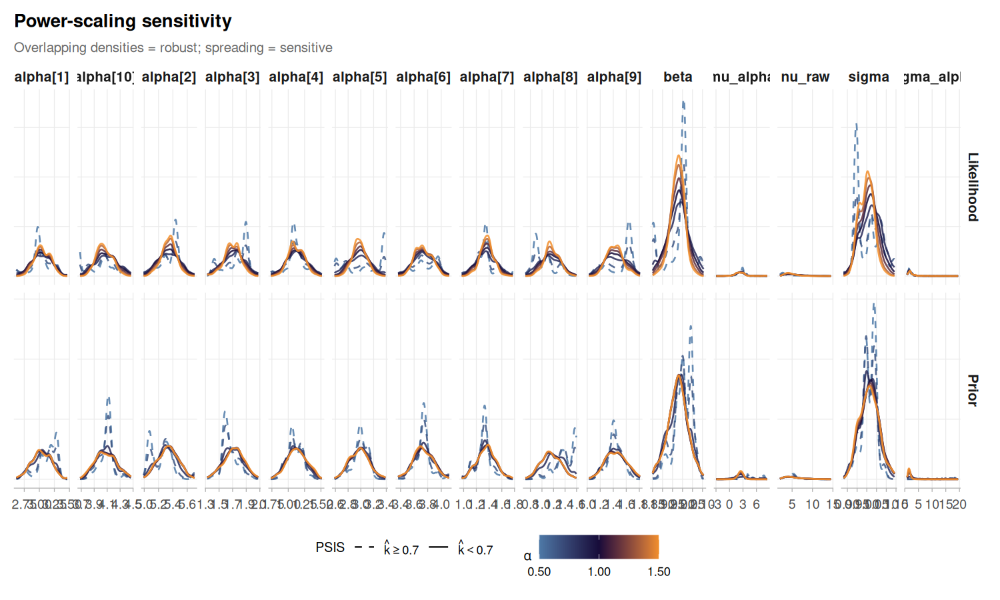
cx_mcmc <- Consort(fit_mcmc)
#>
#> Consort with Lucifer
#> ────────────────────────────────────────
#> Algorithm: Ensemble Slice Sampler (MCMC, ensemble)
#> Time: 3.54 min | Iterations: 15000 | Parameters: 15
#>
#> Non-adaptive ✔ non-adaptive phase
#> Acceptance rate ✔ not applicable
#> MCSE ✘ max ratio = 0.2989 (threshold 0.0627)
#> ESS (bulk/tail) ✘ min bulk = 69, min tail = 62
#> Rhat ✘ max = 1.1929 (threshold 1.01)
#> Divergences ✔ 0
#> Diminishing adaptation ✔ non-adaptive
#>
#> Convergence score: 24.8 / 100
#> ESS / second: 0.3
#>
#> ✘ Lucifer has not been appeased.
#> Suggestion: Continue with more iterations. ESS too low (bulk=69, tail=62); MCSE too high (max ratio=0.2989); Rhat too high (max=1.1929)
rb_mcmc <- RobustBayes(fit_mcmc, Model = spec$Model, Data = Data,
modules = "all")
#> ⚙ Running power-scaling sensitivity...
#> [ ] 1.0% | ETA: 0s[= ] 2.0% | ETA: 0s[= ] 3.0% | ETA: 0s[== ] 4.0% | ETA: 0s[== ] 5.0% | ETA: 0s[== ] 6.0% | ETA: 0s[=== ] 7.0% | ETA: 0s[=== ] 8.0% | ETA: 0s[==== ] 9.0% | ETA: 0s[==== ] 10.0% | ETA: 0s[==== ] 11.0% | ETA: 0s[===== ] 12.0% | ETA: 0s[===== ] 13.0% | ETA: 0s[====== ] 14.0% | ETA: 0s[====== ] 15.0% | ETA: 0s[====== ] 16.0% | ETA: 0s[======= ] 17.0% | ETA: 0s[======= ] 18.0% | ETA: 0s[======== ] 19.0% | ETA: 0s[======== ] 20.0% | ETA: 0s[======== ] 21.0% | ETA: 0s[========= ] 22.0% | ETA: 0s[========= ] 23.0% | ETA: 0s[========== ] 24.0% | ETA: 0s[========== ] 25.0% | ETA: 0s[========== ] 26.0% | ETA: 0s[=========== ] 27.0% | ETA: 0s[=========== ] 28.0% | ETA: 0s[============ ] 29.0% | ETA: 0s[============ ] 30.0% | ETA: 0s[============ ] 31.0% | ETA: 0s[============= ] 32.0% | ETA: 0s[============= ] 33.0% | ETA: 0s[============== ] 34.0% | ETA: 0s[============== ] 35.0% | ETA: 0s[============== ] 36.0% | ETA: 0s[=============== ] 37.0% | ETA: 0s[=============== ] 38.0% | ETA: 0s[================ ] 39.0% | ETA: 0s[================ ] 40.0% | ETA: 0s[================ ] 41.0% | ETA: 0s[================= ] 42.0% | ETA: 0s[================= ] 43.0% | ETA: 0s[================== ] 44.0% | ETA: 0s[================== ] 45.0% | ETA: 0s[================== ] 46.0% | ETA: 0s[=================== ] 47.0% | ETA: 0s[=================== ] 48.0% | ETA: 0s[==================== ] 49.0% | ETA: 0s[==================== ] 50.0% | ETA: 0s[==================== ] 51.0% | ETA: 0s[===================== ] 52.0% | ETA: 0s[===================== ] 53.0% | ETA: 0s[====================== ] 54.0% | ETA: 0s[====================== ] 55.0% | ETA: 0s[====================== ] 56.0% | ETA: 0s[======================= ] 57.0% | ETA: 0s[======================= ] 58.0% | ETA: 0s[======================== ] 59.0% | ETA: 0s[======================== ] 60.0% | ETA: 0s[======================== ] 61.0% | ETA: 0s[========================= ] 62.0% | ETA: 0s[========================= ] 63.0% | ETA: 0s[========================== ] 64.0% | ETA: 0s[========================== ] 65.0% | ETA: 0s[========================== ] 66.0% | ETA: 0s[=========================== ] 67.0% | ETA: 0s[=========================== ] 68.0% | ETA: 0s[============================ ] 69.0% | ETA: 0s[============================ ] 70.0% | ETA: 0s[============================ ] 71.0% | ETA: 0s[============================= ] 72.0% | ETA: 0s[============================= ] 73.0% | ETA: 0s[============================== ] 74.0% | ETA: 0s[============================== ] 75.0% | ETA: 0s[============================== ] 76.0% | ETA: 0s[=============================== ] 77.0% | ETA: 0s[=============================== ] 78.0% | ETA: 0s[================================ ] 79.0% | ETA: 0s[================================ ] 80.0% | ETA: 0s[================================ ] 81.0% | ETA: 0s[================================= ] 82.0% | ETA: 0s[================================= ] 83.0% | ETA: 0s[================================== ] 84.0% | ETA: 0s[================================== ] 85.0% | ETA: 0s[================================== ] 86.0% | ETA: 0s[=================================== ] 87.0% | ETA: 0s[=================================== ] 88.0% | ETA: 0s[==================================== ] 89.0% | ETA: 0s[==================================== ] 90.0% | ETA: 0s[==================================== ] 91.0% | ETA: 0s[===================================== ] 92.0% | ETA: 0s[===================================== ] 93.0% | ETA: 0s[====================================== ] 94.0% | ETA: 0s[====================================== ] 95.0% | ETA: 0s[====================================== ] 96.0% | ETA: 0s[======================================= ] 97.0% | ETA: 0s[======================================= ] 98.0% | ETA: 0s[========================================] 99.0% | ETA: 0s[========================================] 100.0% | ETA: 0s
#> [========================================] 100.0% | ETA: 0s
#> ¡ Power-scaling prior...
#> ¡ Power-scaling likelihood...
#> ⚠ Cross-model comparison skipped: requires >= 2 fits.
#> ⚠ Prior-data conflict skipped: Data$PGF not found.
#> ⚙ Running observation influence analysis...
#> ¡ Computing pointwise log-likelihoods...
#> ¡ Stochastic yhat detected; using LOO-Dev decomposition (1000 x 600 evaluations)...
#> [ ] 1.0% | ETA: 94s[= ] 2.0% | ETA: 93s[= ] 3.0% | ETA: 92s[== ] 4.0% | ETA: 91s[== ] 5.0% | ETA: 90s[== ] 6.0% | ETA: 89s[=== ] 7.0% | ETA: 90s[=== ] 8.0% | ETA: 88s[==== ] 9.0% | ETA: 88s[==== ] 10.0% | ETA: 86s[==== ] 11.0% | ETA: 85s[===== ] 12.0% | ETA: 84s[===== ] 13.0% | ETA: 83s[====== ] 14.0% | ETA: 82s[====== ] 15.0% | ETA: 81s[====== ] 16.0% | ETA: 80s[======= ] 17.0% | ETA: 79s[======= ] 18.0% | ETA: 78s[======== ] 19.0% | ETA: 77s[======== ] 20.0% | ETA: 76s[======== ] 21.0% | ETA: 75s[========= ] 22.0% | ETA: 74s[========= ] 23.0% | ETA: 73s[========== ] 24.0% | ETA: 73s[========== ] 25.0% | ETA: 72s[========== ] 26.0% | ETA: 71s[=========== ] 27.0% | ETA: 70s[=========== ] 28.0% | ETA: 69s[============ ] 29.0% | ETA: 68s[============ ] 30.0% | ETA: 67s[============ ] 31.0% | ETA: 66s[============= ] 32.0% | ETA: 65s[============= ] 33.0% | ETA: 64s[============== ] 34.0% | ETA: 63s[============== ] 35.0% | ETA: 62s[============== ] 36.0% | ETA: 61s[=============== ] 37.0% | ETA: 60s[=============== ] 38.0% | ETA: 59s[================ ] 39.0% | ETA: 58s[================ ] 40.0% | ETA: 57s[================ ] 41.0% | ETA: 56s[================= ] 42.0% | ETA: 55s[================= ] 43.0% | ETA: 54s[================== ] 44.0% | ETA: 53s[================== ] 45.0% | ETA: 52s[================== ] 46.0% | ETA: 51s[=================== ] 47.0% | ETA: 50s[=================== ] 48.0% | ETA: 49s[==================== ] 49.0% | ETA: 49s[==================== ] 50.0% | ETA: 48s[==================== ] 51.0% | ETA: 47s[===================== ] 52.0% | ETA: 46s[===================== ] 53.0% | ETA: 45s[====================== ] 54.0% | ETA: 44s[====================== ] 55.0% | ETA: 43s[====================== ] 56.0% | ETA: 42s[======================= ] 57.0% | ETA: 41s[======================= ] 58.0% | ETA: 40s[======================== ] 59.0% | ETA: 39s[======================== ] 60.0% | ETA: 38s[======================== ] 61.0% | ETA: 37s[========================= ] 62.0% | ETA: 36s[========================= ] 63.0% | ETA: 35s[========================== ] 64.0% | ETA: 34s[========================== ] 65.0% | ETA: 33s[========================== ] 66.0% | ETA: 32s[=========================== ] 67.0% | ETA: 31s[=========================== ] 68.0% | ETA: 31s[============================ ] 69.0% | ETA: 30s[============================ ] 70.0% | ETA: 29s[============================ ] 71.0% | ETA: 28s[============================= ] 72.0% | ETA: 27s[============================= ] 73.0% | ETA: 26s[============================== ] 74.0% | ETA: 25s[============================== ] 75.0% | ETA: 24s[============================== ] 76.0% | ETA: 23s[=============================== ] 77.0% | ETA: 22s[=============================== ] 78.0% | ETA: 21s[================================ ] 79.0% | ETA: 20s[================================ ] 80.0% | ETA: 19s[================================ ] 81.0% | ETA: 18s[================================= ] 82.0% | ETA: 17s[================================= ] 83.0% | ETA: 16s[================================== ] 84.0% | ETA: 15s[================================== ] 85.0% | ETA: 14s[================================== ] 86.0% | ETA: 13s[=================================== ] 87.0% | ETA: 12s[=================================== ] 88.0% | ETA: 11s[==================================== ] 89.0% | ETA: 10s[==================================== ] 90.0% | ETA: 10s[==================================== ] 91.0% | ETA: 9s[===================================== ] 92.0% | ETA: 8s[===================================== ] 93.0% | ETA: 7s[====================================== ] 94.0% | ETA: 6s[====================================== ] 95.0% | ETA: 5s[====================================== ] 96.0% | ETA: 4s[======================================= ] 97.0% | ETA: 3s[======================================= ] 98.0% | ETA: 2s[========================================] 99.0% | ETA: 1s[========================================] 100.0% | ETA: 0s
#> [========================================] 100.0% | ETA: 0s
#> ¡ Computing PSIS-LOO influence...
#> ⚠ Robust aggregation skipped: requires >= 2 fits.
#> ✔ RobustBayes completed in 1.6 minutes.
print(rb_mcmc)
#>
#> Robust Bayesian sensitivity analysis
#> --------------------------------------------------
#> Models: 1 (demonoid)
#> Parameters: 15
#> Observations: 1000
#> Time: 1.6 min
#>
#> ¡ Power-scaling sensitivity:
#> ✔ robust: 15 parameter(s)
#> Top prior-sensitive: mu_alpha (0.011), sigma_alpha (0.010), alpha[1] (0.007)
#>
#> ¡ Observation influence:
#> ⚠ 1 of 1000 observations flagged (Pareto k > 0.7)
plot(rb_mcmc, type = "dashboard")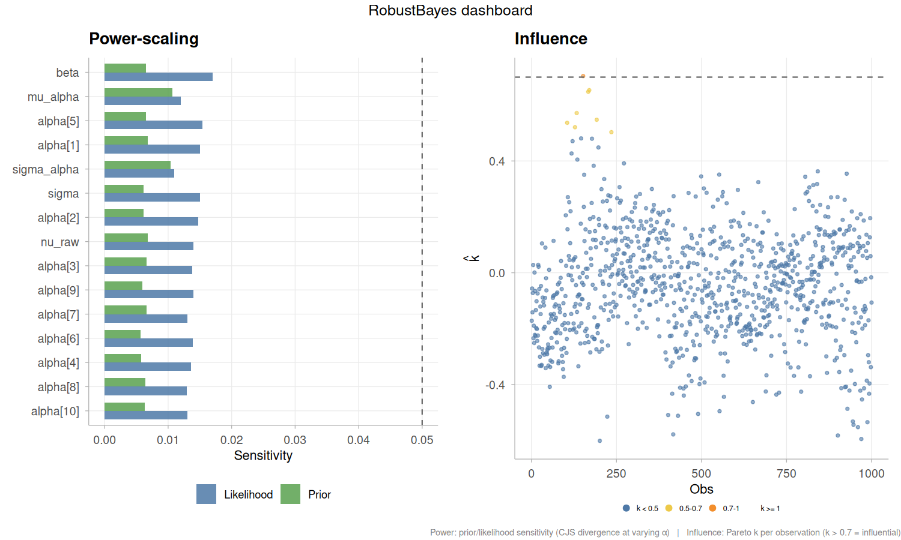
plot(rb_mcmc, type = "power_density")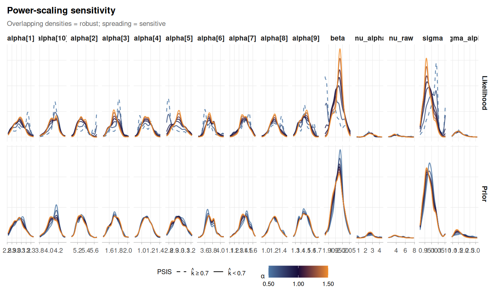
Cross-checking with brms (NUTS via Stan)
To exercise the interoperability layer described in the Overview, we refit the same hierarchical Student-\(t\) model using brms, which compiles the model to Stan and samples with NUTS. The formula y ~ 1 + x + (1 | group) with family = student() and matching priors specifies the same generative model; the parameter names differ because brms uses treatment-coded fixed effects (b_Intercept ≡ \(\mu_\alpha\), sd_group__Intercept ≡ \(\sigma_\alpha\)) and reports \(\nu\) directly on its natural scale (\(\nu = \nu_\text{raw} + 2\)). Once converted with as.demonoid(), the brms fit is indistinguishable, from lucifer’s perspective, from a fit produced by SMC or Zeus, and can be fed into exactly the same comparison machinery. For a much fuller worked example that fits this same model class with every JAGS wrapper, every Stan wrapper, and every lucifer inference family side by side, see vignette("interoperability", package = "lucifer").
library(brms)
df <- data.frame(y = y, x = x, group = factor(group))
priors <- c(
prior(normal(0, 10), class = "Intercept"),
prior(normal(0, 10), class = "b", coef = "x"),
prior(cauchy(0, 2.5), class = "sd", group = "group"),
prior(cauchy(0, 2.5), class = "sigma"),
prior(exponential(0.1), class = "nu")
)
brms_fit <- brm(
y ~ 1 + x + (1 | group),
data = df, family = student(),
prior = priors,
chains = 3, iter = 2000, warmup = 1000,
cores = 3, seed = 42, refresh = 0, silent = 2
)
# Convert the brmsfit into a native lucifer demonoid object
fit_brms <- as.demonoid(brms_fit)
class(fit_brms)
#> [1] "demonoid"
# All lucifer post-processing works transparently on the converted object
summary(fit_brms)
#>
#> Algorithm: Stan:NUTS (brms)
#> Iterations: 3000
#> Thinned samples: 3000
#> Minutes: 0.26
#> Chains: 3
#> CPUs: 1
#>
#> --- Acceptance ---
#> Combined: 0.91867
#> Per-chain: 0.91867, 0.91867, 0.91867
#>
#> --- Convergence ---
#> Stationarity: achieved
#> Burn-in (thinned): 0 (auto-BMK)
#> Posterior2 samples: 3000
#> Recommended thinning: 7
#>
#> --- Split R-hat (Vehtari et al. 2021) ---
#> Max split R-hat: 1.006 (excellent)
#>
#> --- Gelman-Rubin diagnostic (classical) ---
#> Point Est. Upper C.I.
#> b_Intercept 1.001 1.002
#> b_x 1.002 1.005
#> sd_group__Intercept 1.012 1.016
#> sigma 1.006 1.019
#> nu 1.005 1.014
#> Intercept 1.001 1.002
#> r_group[1,Intercept] 1.001 1.003
#> r_group[2,Intercept] 1.001 1.002
#> r_group[3,Intercept] 1.001 1.002
#> r_group[4,Intercept] 1.001 1.002
#> r_group[5,Intercept] 1.001 1.001
#> r_group[6,Intercept] 1.001 1.003
#> r_group[7,Intercept] 1.001 1.001
#> r_group[8,Intercept] 1.001 1.002
#> r_group[9,Intercept] 1.001 1.002
#> r_group[10,Intercept] 1.001 1.002
#> lprior 1.007 1.008
#> Max PSRF: 1.012 (convergence adequate)
#> MPSRF: 1.008
#>
#> --- DIC ---
#> All Stationary
#> Dbar 3145.164 3145.164
#> pD 12.361 12.361
#> DIC 3157.525 3157.525
#> Log(Marginal Likelihood): -1571.541
#>
#> --- Posterior summary (all samples) ---
#> Mean SD MCSE ESS LB Median
#> b_Intercept 2.6196 0.5350 0.0298 619.6871 1.5333 2.6155
#> b_x 1.9758 0.0358 0.0010 2079.8193 1.9060 1.9752
#> sd_group__Intercept 1.6343 0.4910 0.0288 483.9549 1.0037 1.5356
#> sigma 0.9858 0.0367 0.0011 1574.1362 0.9123 0.9851
#> nu 6.3655 1.1926 0.0362 2116.1314 4.4900 6.2389
#> Intercept 2.5811 0.5350 0.0298 619.7077 1.4952 2.5765
#> r_group[1,Intercept] 0.4345 0.5441 0.0296 605.3382 -0.6170 0.4377
#> r_group[2,Intercept] 2.7098 0.5444 0.0302 619.9976 1.6270 2.7097
#> r_group[3,Intercept] -0.9097 0.5418 0.0297 584.8159 -1.9521 -0.9051
#> r_group[4,Intercept] -1.5050 0.5450 0.0300 574.4549 -2.5606 -1.5039
#> r_group[5,Intercept] 0.3686 0.5442 0.0305 567.3702 -0.6663 0.3699
#> r_group[6,Intercept] 1.1269 0.5433 0.0298 578.1187 0.0575 1.1264
#> r_group[7,Intercept] -1.2266 0.5439 0.0296 593.2895 -2.2884 -1.2084
#> r_group[8,Intercept] -1.4175 0.5465 0.0300 608.5281 -2.4845 -1.4131
#> r_group[9,Intercept] -1.1897 0.5410 0.0294 614.7454 -2.2672 -1.1837
#> r_group[10,Intercept] 1.4471 0.5415 0.0297 580.0517 0.3726 1.4497
#> lprior -12.5798 0.2249 0.0115 652.4700 -13.0863 -12.5400
#> Deviance 3145.1640 4.9721 0.1717 1274.6868 3137.4074 3144.5898
#> LP -1572.5820 2.4861 0.0859 1274.6868 -1578.1411 -1572.2949
#> UB
#> b_Intercept 3.6605
#> b_x 2.0454
#> sd_group__Intercept 2.7581
#> sigma 1.0570
#> nu 9.0173
#> Intercept 3.6217
#> r_group[1,Intercept] 1.5385
#> r_group[2,Intercept] 3.8358
#> r_group[3,Intercept] 0.1987
#> r_group[4,Intercept] -0.4027
#> r_group[5,Intercept] 1.4738
#> r_group[6,Intercept] 2.2461
#> r_group[7,Intercept] -0.1289
#> r_group[8,Intercept] -0.3232
#> r_group[9,Intercept] -0.0879
#> r_group[10,Intercept] 2.5567
#> lprior -12.2542
#> Deviance 3156.2821
#> LP -1568.7037
#>
#> --- Posterior summary (stationary samples) ---
#> Mean SD MCSE ESS LB Median
#> b_Intercept 2.6196 0.5350 0.0298 619.6871 1.5333 2.6155
#> b_x 1.9758 0.0358 0.0010 2079.8193 1.9060 1.9752
#> sd_group__Intercept 1.6343 0.4910 0.0288 483.9549 1.0037 1.5356
#> sigma 0.9858 0.0367 0.0011 1574.1362 0.9123 0.9851
#> nu 6.3655 1.1926 0.0362 2116.1314 4.4900 6.2389
#> Intercept 2.5811 0.5350 0.0298 619.7077 1.4952 2.5765
#> r_group[1,Intercept] 0.4345 0.5441 0.0296 605.3382 -0.6170 0.4377
#> r_group[2,Intercept] 2.7098 0.5444 0.0302 619.9976 1.6270 2.7097
#> r_group[3,Intercept] -0.9097 0.5418 0.0297 584.8159 -1.9521 -0.9051
#> r_group[4,Intercept] -1.5050 0.5450 0.0300 574.4549 -2.5606 -1.5039
#> r_group[5,Intercept] 0.3686 0.5442 0.0305 567.3702 -0.6663 0.3699
#> r_group[6,Intercept] 1.1269 0.5433 0.0298 578.1187 0.0575 1.1264
#> r_group[7,Intercept] -1.2266 0.5439 0.0296 593.2895 -2.2884 -1.2084
#> r_group[8,Intercept] -1.4175 0.5465 0.0300 608.5281 -2.4845 -1.4131
#> r_group[9,Intercept] -1.1897 0.5410 0.0294 614.7454 -2.2672 -1.1837
#> r_group[10,Intercept] 1.4471 0.5415 0.0297 580.0517 0.3726 1.4497
#> lprior -12.5798 0.2249 0.0115 652.4700 -13.0863 -12.5400
#> Deviance 3145.1640 4.9721 0.1717 1274.6868 3137.4074 3144.5898
#> LP -1572.5820 2.4861 0.0859 1274.6868 -1578.1411 -1572.2949
#> UB
#> b_Intercept 3.6605
#> b_x 2.0454
#> sd_group__Intercept 2.7581
#> sigma 1.0570
#> nu 9.0173
#> Intercept 3.6217
#> r_group[1,Intercept] 1.5385
#> r_group[2,Intercept] 3.8358
#> r_group[3,Intercept] 0.1987
#> r_group[4,Intercept] -0.4027
#> r_group[5,Intercept] 1.4738
#> r_group[6,Intercept] 2.2461
#> r_group[7,Intercept] -0.1289
#> r_group[8,Intercept] -0.3232
#> r_group[9,Intercept] -0.0879
#> r_group[10,Intercept] 2.5567
#> lprior -12.2542
#> Deviance 3156.2821
#> LP -1568.7037
#>
#> --- Effective sample size ---
#> Min ESS: 484 (sd_group__Intercept)
#> Median ESS: 608.5
#> Min Bulk-ESS: 522.2 (sd_group__Intercept)
#> Min Tail-ESS: 729 (Intercept)
#>
#> --- Overall assessment ---
#> Lucifer is appeased. Samples appear suitable for inference.lucifer has a built-in function to plot NUTS-specific diagnostics. It can print a summary similar to Stan’s check_hmc_diagnostics, and checks for divergent transitions, low E-BFMI (energy Bayesian fraction of missing information), and excessive tree depth saturation:
diag <- check_nuts(fit_brms)
print(diag)
#>
#> ⚙ NUTS diagnostics (3000 iterations)
#> ──────────────────────────────────────────────────
#> ✔ No divergent transitions
#> ✔ E-BFMI = 0.826
#> ⚠ Tree depth: 7 reached in 14.8% of iterations
#> Consider increasing Lmax in Specs.
#>
#> Mean leapfrog steps: 68.8
#> Mean tree depth: 5.3
#> Mean energy: 1604.6
plot(diag)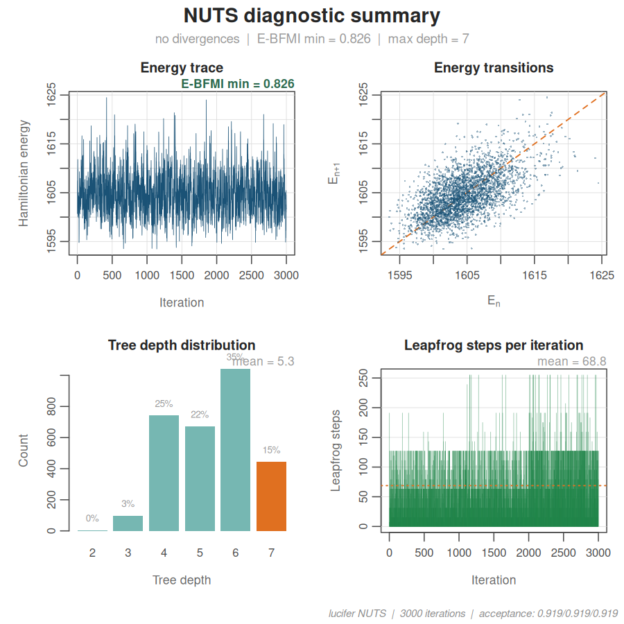
Consort() then runs the full convergence battery on the converted object, using $NUTS.Diagnostics when present to report divergences, tree-depth saturation, and E-BFMI alongside the usual split-\(\hat{R}\), bulk/tail ESS, and MCSE summaries.
cx_brms <- Consort(fit_brms)
#>
#> Consort with Lucifer
#> ────────────────────────────────────────
#> Algorithm: Stan:NUTS (brms) (MCMC)
#> Time: 0.26 min | Iterations: 3000 | Parameters: 17
#>
#> Non-adaptive ✔ non-adaptive phase
#> Acceptance rate ✔ not applicable
#> MCSE ✔ max ratio = 0.0586 (threshold 0.0627)
#> ESS (bulk/tail) ✔ min bulk = 522, min tail = 729
#> Rhat ✔ max = 1.0059 (threshold 1.01)
#> Divergences ✔ 0
#> Diminishing adaptation ✔ non-adaptive
#>
#> Convergence score: 68.2 / 100
#> ESS / second: 33.6
#>
#> ✔ Lucifer has been appeased.
plot(cx_brms)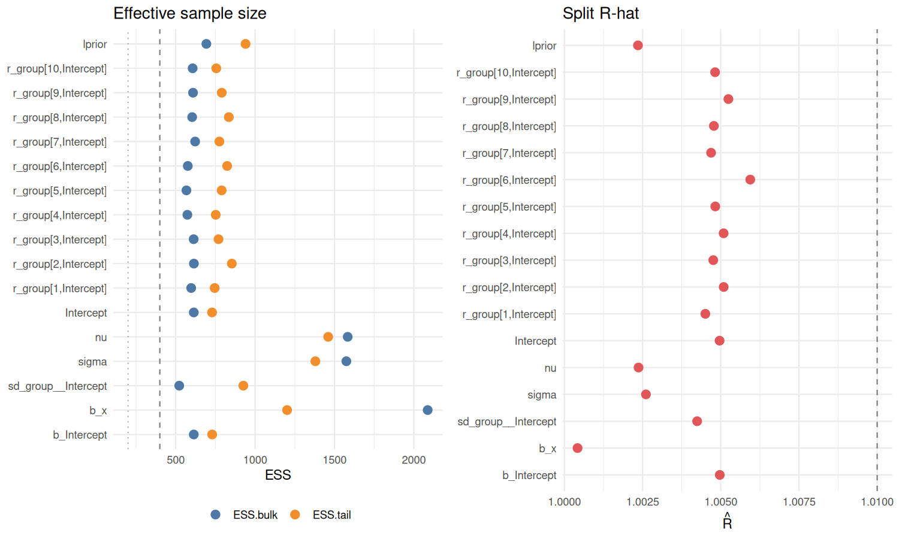
Posterior comparison: lucifer SMC vs lucifer MCMC vs brms/NUTS
With all three fits on a common footing, we extract posterior means and 95% intervals for the top-level regression coefficients and the hierarchical hyperparameters, then plot them side by side. The three engines target the same posterior, so differences reflect a combination of Monte Carlo error and sampler efficiency rather than model disagreement.
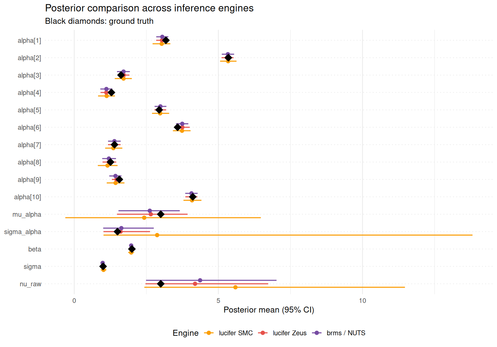
The three engines produce close agreement on well-identified parameters (\(\beta\), \(\sigma\), and the group-level intercepts \(\alpha_j\)), where sampling variability is the only meaningful source of difference. The weakly-identified parameters (\(\mu_\alpha\), \(\sigma_\alpha\), \(\nu\)) show wider intervals in every method, which is a structural feature of hierarchical Student-\(t\) models with \(J = 10\) groups: the posterior funnel is intrinsically hard, and the degrees of freedom of a Student-\(t\) distribution are estimated from tail behavior alone. The fact that SMC (tempered importance sampling), Zeus (ensemble slice sampling), and NUTS (gradient-based HMC with automatic adaptation) converge on quantitatively consistent summaries is the strongest possible cross-validation that the posterior is being characterized as correctly as the data allow.
Citation
citation("lucifer")
#> To cite package 'lucifer' in publications use:
#>
#> Almaraz P, Hall B, Hall M, Statisticat, LLC, RElab (2026). _lucifer:
#> An Exhaustive Environment for Bayesian Inference with C++ Backend and
#> OpenMP parallelization_. R package version 3.7.1,
#> <https://github.com/robustecologies/lucifer>.
#>
#> A BibTeX entry for LaTeX users is
#>
#> @Manual{,
#> title = {lucifer: An Exhaustive Environment for Bayesian Inference with C++
#> Backend and OpenMP parallelization},
#> author = {Pablo Almaraz and Byron Hall and Martina Hall and {Statisticat, LLC} and {RElab}},
#> year = {2026},
#> note = {R package version 3.7.1},
#> url = {https://github.com/robustecologies/lucifer},
#> }Disclaimer
This package is the original creation of the author in all conceptual, theoretical, and design aspects. Implementation was assisted by Anthropic’s Claude Code (Opus 4.6-4.7) to streamline package development. All original ideas, creativity, and scientific contributions belong to the author, who maintains full responsibility for the package’s correctness and reliability. All the code has been thoroughly tested, and users are encouraged to report any issues through the package’s issue tracker.